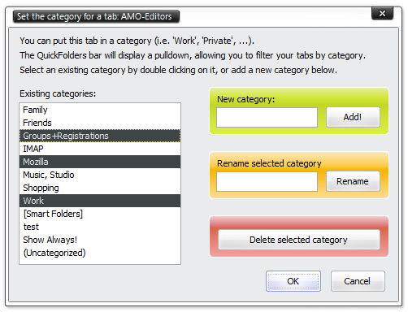
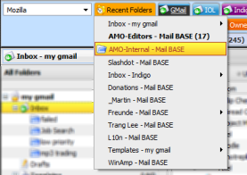
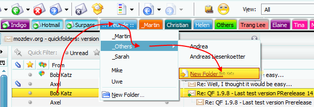
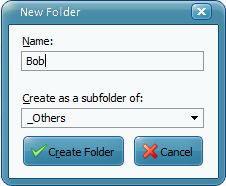
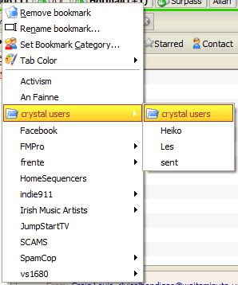
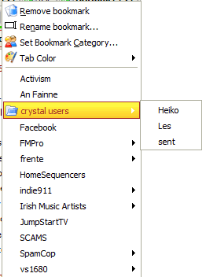

This is the older verison history from 0.2 until 2.0
All dates are displayed in UK format: dd/mm/yyyy - you can request any version that is marked as not released or any old version listed; just send me a personal email from the quickfolders options dialog / on the Support tab - [(Jump to Screen Shot)].
Added hidden Option for disabling drag to New folder in local accounts [Bug 22812]
Made compatible with Thunderbird 10.0 (new overlay because of structural changes)
Replaced Mostly Crystal Icons with the original ones from Everaldo Crystal Project (version from 2003); Crystal Icons are released under GNU General Public License
Renamed 'bookmark' to 'tab' to make descriptions easier to understand
Tab Categories - Highlight "uncategorized" item if a folder has no category; optimized category retrieval by caching cat array.
Tab Categories - fixed Category Remove / Rename which was broken due to introduction of "use strict"

Tab Categories - added logic to unselect other items if show ALWAYS or UNCATEGORIZED are selected
Special release for older versions of Thunderbird (3 and 2) - fixes [Bug 24451]
On these systems the folder string would not load when starting Thunderbird, displaying an empty QuickFolders toolbar. Important note:
If QuickFolders doesn't load completely due to a bug (so that no or incomplete tabs are displayed) adding the folders manually won't fix it - chances are that this might have the opposite effect - adding folders when the folder string has not been loaded unfortunately will save an empty folders string. In these cases, it is usually better to wait for a patch or revert to an older version.
Fixed [Bug 24389]version history and update popup happen always
Stability fixes on version updates - firstRun check is now only run _after_ extension version number was retrieved from AddonManager
Removed popup "successfully upgraded to version..." and replaced with a sliding notification panel
added "use strict" for better namespace pollution control
added hidden option to suppress version history on update
[Bug 24451] On older versions of Thunderbird (pre 4.2) the
folders are not displayed as QuickFolders can not be loaded completely. Patched version is available here.
Some users experience the update dialog and version/donation pages being opened repeatedly -
this is the new [Bug 24389] I am currently working on a fix, look for the latest
pre-release versions at
Fixed [Bug 24143] - In Linux, the folder disappear and ALT+N shortcuts disabled on upgrade to 2.7 - renamed Current Folder XUL files.
Added [about:config] option to hide QF toolbar when it is not needed (e.g. Calendar view)
to set go to tools > options > advanced > general, click [Config Editor...] and set extensions.quickfolders.toolbar.onlyShowInMailWindows to true
Fixed: In Postbox could not drag new folders to toolbar (Error: msgFolder.QueryInterface is not a function)
Fixed a bug that caused folders to disappear on TB2 on Mac Systems (related to new Current Folder Bar)
Right dropmarker did not display correctly when reordering tabs
Improved Performance during lengthy mail downloads by not _completely_ rebuilding the visible tabs
(now only updating labels and popupmenus of the existing tabs so that counts & "unread style" are up to date
[Bug 23542] using Postbox 2.1 you can not currently move an email to a subfolder via a context menu item. We have reported this to the POstbox development team (because it worked in 2.0.2)
Added Recent Folders Tab on user request. By default this is disabled, because it adds a slight overhead when changing categories.

To enable, check the option on the General Options Page. Right click the option for more settings:
show/hide "Recent Folders" Label
sort alphabetically
max number of recent folders displayed
current limitations:
color hardcoded (yellow)
position: this is always the left-most tab
Fixed a problem when dragging to New Folder from find result list (error message: no source folder)
Added locale sv-SE by Mikael Hiort af Ornaes
Fixed Positioning problems of Folder Menus - now they attach properly to the bottom of the tabs (as they did in TB2)
On Special request: Drag to New Folder Command - similar to a feature in Eudora, enables creating new folders "on the fly" while dragging your messages - currently not supported in TB2 and IMAP folders.


Fixed [Bug 23209] CTRL+Number Shortcut opens new content tabs
Fixed [Bug 21317] During drag & drop, the top item in subfolders list is not sorted alphabetically
Fixed CTRL+Shift+Number did not move selected messages
Compatible with Postbox 2.0.b3
Fixed a bug that made reordering quicktabs to the right of their current position fail sometimes
TB2 - Fixed - hidden shadows option and made icons option visible again
[Bug 22902] Added ensureStyleSheetLoaded method for testing
Fixed [Bug 23091] this caused parent subfolder to be opened instead of subfolder (if not visible in folder tree)
Added deep scanning of folder counts and display for all sub menu items. menus with unread nested subfolders also bold.
Fixed missing translation in french options screen
Fixed [Bug 23078] the (black) font on the filled style pimped tabs was unreadeable. Font color hardcoded to white for dark backgrounds
- this overrides the user set font color, by design.
The 20 different colors of "Filled Mode", before and after:
Renamed style sheet files and title to avoid referencing clashes
Refactored code from main module into Interface.collapseParentMenus
Side effect of the improvement "Simplified folder navigation" in version 1.9.3:
Currently a folder that expands into sub folders can not be opened by clicking on it - I will be releasing a bug fix for this soon.
Simplified folder navigation - you will be able to click / drag on expanding popup nodes, similar to the Firefox bookmark menus - no more duplication / right dragging for these.
before: unnecessary duplication :-(
after: 8-)


Fixed [Bug 22901] - Position of subfolder within submenu should be always on top, even with alphabetical sorting enabled.
Added Version History link to Options / Support
Feature Request link on Support Panel (uses Bugzilla)
Fixed [Bug 22585] - Smart Folders view erratically switched to standard folder if clicked folder is in a collapsed tree branch
Fixed [Bug 21054] - Enabled scrolling long menus while dragging by using code from Robert Gibson's "Scroll Menus On Drag" extension https://addons.mozilla.org/firefox/addon/1411
Fixed [Bug 22695] - now folders can be moved within the folder tree without QuickFolders losing track of them
Added code for displaying counts of subfolders (suggested by Pavel)
Added code for customizing the "QuickFolders" label (suggested by Pavel)
Added an option for sorting subfolders in menus alphabetically
On Upgrade of an existing version, now shows version history and donation page.
Added locale sr by DakSrbija
various tooltips in options dialog
tightened up namespace pollution issues
Added version history jump to options dialog (right-click from version number)
Fixed [Bug 22295] (TB3, selecting a QuickFolder closes single Message Tab) => now opens a folder view tab
Fixed [Bug 22144] - Highlighting not updated when switching Tabs in TB3 - now also selects Category if necessary!
Fixed [Bug 22316] - added Transparency options for toolbar (Personas friendly) and tabs (translucently colored, use white for almost complete transparency)
Fixed Broken Dutch locale leading to crashes for the users of this language
Added Help menu item for popup menu
Added Shadows option
Added ca-AD locale (Catalan) by Jordi Benaiges; Improvements to Russian, Italian and Dutch locales.
Improved toggling between flat style and native style tabs
Improved following external support links in TB3 (done) and SeaMonkey (WIP)
Bumped up max version number for Thunderbird to 3.1.0
Improved: tried to resolve as many name space conflicts with other extensions as possible by using QF_ prefix for global objects
Fixed (TB3): Smart Folders did not expand when clicking one of the child folders (Sent / Inbox / Drafts...).
I programmed a workaround - the bug itself can be found here.
Added: mail tab support for TB3, SeaMonkey and Postbox. Changing tabs will also affect current QF selection (and Categories)
Added: separate debug options for mailTabs, folders, CSS, Drag and Drop, popup menus and (folder) events
by creating various extensions.quickfolders.debug... these can be now easily changed by Right-clicking the Debug Checkbox on the first Options screen.
This will display all debug options in the about:config window where they can be toggled by simple double-clicking.
Fixed [Bug 21919]: (TB2) In Linux Ubuntu (9.04) and OpenSuse when
the users drag amessage into a quickfolder tab and then try to move it
to a subfolder on the subfolder popup menu, thunderbird just closes.
Resolved by bypassing the code that removes the popup (TB2 only, as bug
is not confirmed for TB3)
In certain Linux environments, such as Ubuntu Jounty when the users drag a
message into a quickfolder tab and then try to move it to a subfolder on the
subfolder popup menu, thunderbird just closes.
fixed: slowdown of operations that change the number of Total / Unread emails because QF was updated every time - now done asynchronously with a 1000ms timer.
fixed: TB3 folder tree did not scroll to correct position
added: Option to show subfolders in popup menus
added: whole / striped tab option and backgrounds
fixed: no more accidental menu popups when customizing toolbars
improved: "Change the order of bookmarks " dialog (scrollbars, animation)
removed constant debug output of keyboard handler (now only visible in debug mode and when relevant)
increased width of options window to avoid truncation of italian quickhelp texts
language resources for debug items
added icon for folder to clipboard
added Code to remove dynamic "subfolder" popup menus that act as drop targets. this should also deal with resource issues
made sorting with mouse more persistant (it sometimes jumped back!)
added: Display Number of unread messages in popup menus
added: Default Color button
added: Debug Mode for trouble shooting
fixed: some users could not save folders
Changed the behavior of switching the folder pane to "All Folders" view (reported by Gant51) this is now only done if the selected folder does not exist in the current vi
Addresses an issue with instantApply which ignored settings in the layout ("pimp my tabs!") tab.
(by forcing display of OK / Cancel button for applying color options)
Also improved recognizing of special folders for Icon option. (Previous version falsely identified sub folders of Inbox etc.)
Fixed: Popup menus sometimes drifted down when dragging messages on them
Fixed: If the same quickfolder was dragged to after the first drag operation was not completed, the popup would not display again (until dragging onto a different quickfolder)
Fixed: The layout of flat style was tidied up to take up less screen space and look better.
Added: Display current QuickFolder version number in options dialog
The quickest way to contact me (apart from filing a bug report): Right-click the QuickFolders toolbar, select QuickFolders support, then click the last button:
Entering European languages (which include diacritics (accented characters, diaeresis, umlauts, etc.), ligatures, the Euro sign, etc.)
into Mozilla applications using a non-native keyboards doesn't have to be a pain any more!
SmartTemplate4
offers an easy way to customize Thunderbirds default quote header by using templates.
Templates can be created for every account as well as for global settings (for all email accounts).